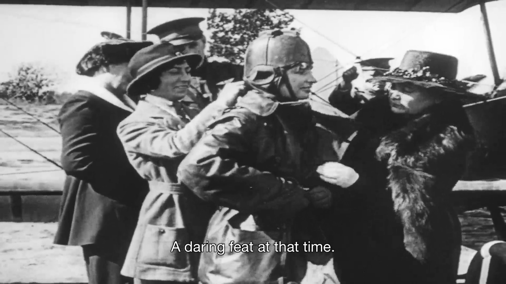

Women's Rights: The Wings of Change
Film Clip of Helen Keller's First Flight in 1918
Open Video Player
Transcript
Female narrator: It showed her first airplane ride. A daring feat at that time. Male audio description: In old, black and white footage, elegantly-dressed women help tidy Helen’s leather coat. [engine rumbles] Male audio description: She also wears a tight leather helmet on her head. An airplane drives across a field and takes off into the air. On the ground, Helen’s friends watch excitedly as the plane flies high in the sky. [uplifting orchestral music] Male audio description: Helen rides in the front and a pilot steers in the back of the two-seater aircraft. Wind flies over their heads in the open, roofless plane. The airplane safely lands on the flat, grassy ground. Dozens of people rush to the parked plane and assist Helen out of the sunken seat. Helen smiles broadly and hugs her teacher Anne Sullivan Macy.
Close TranscriptFreedom Taking Flight
In the 1910’s, women in the United States were fighting against gender discrimination, demanding equal representation through the Woman’s Suffrage movement. It was during this time that Helen Keller would soar far above discriminatory labels to become a prominent figure in the battle for gender equality, proving to the world that women can do anything. In an era when air travel was a novelty, and women– especially those with disabilities– seldom traveled, Helen Keller challenged the sexist and ableist misconception that a deafblind woman couldn’t fly, let alone enjoy the experience. Helen, describing her first flight in 1918, wrote: "I was thrilled, excited, happy! Never in my life had I felt such a sense of freedom..." Smiling, fearless, and determined, the video of Helen’s first flight embodies the spirited disobedience against gender norms that would eventually lead to the victory of the Women’s Suffrage movement two years later.
Next Section of "The Wings of Change"